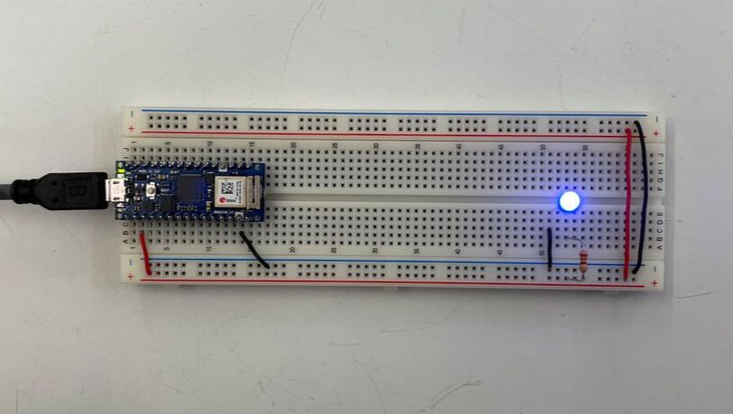
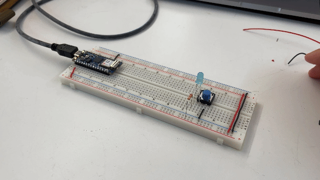
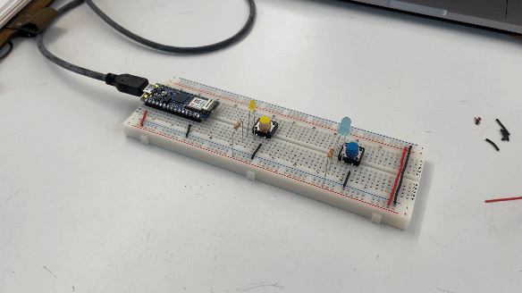
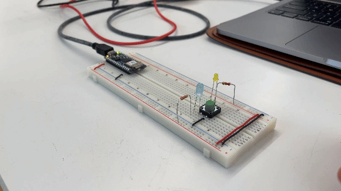
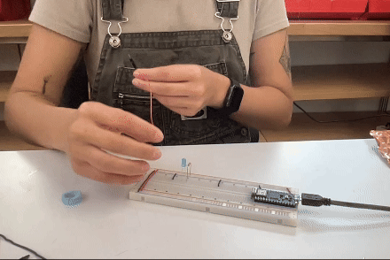
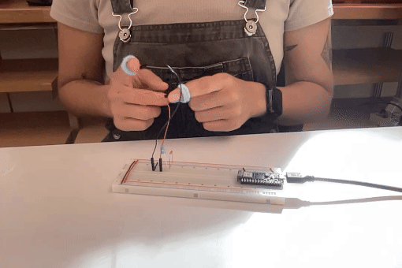

lab activity: setup arduino on breadboard & other components
Starting off nice and easy by powering an LED on a breadboard with the arduino.




I think this might be due to two reasons: The physicality of lightwaves, and the make up of the human eye. Physically, red colored light has longer wavelengths and require less energy to to be emitted, therefore the red LEDs have less resistance? Perceptually, the human eye has different sensitivities to different colors of light, so perhaps we see red light more easily than blue light?

creative output: switch exercise, part 1
This week's assignment is to build a simple mechanical switch with things that can be found around the shop. I approached this assignment by breaking down the circuit and scaling it up as we go.
- Starting with the single blue LED circuit, I swapped out the switch for two jumper wires to serve as my custom switch connection points.
- Testing by connecting the headers to make sure the circuit still worked.
- To make it a little more interesting, I added "finger sleeves" to the jumper wires to
change the interaction behavior. Here is the worlds quietest clap lighting up an LED.
Observation: The connection is a little inconsistent as it requires a substantial amount of pressure to close the circuit.


creative output: switch exercise, part 2
I wasnt completely satisfied with this initial switch, so I created a different one. Inspired by the table top game "Operations", but in reverse. Follow the conductive path to keep the light on.
- I started off with the same wiring schematic as the "Quietest Clap", and connected one wire for the switch to a labyrinth pattern I found on the Junk Shelf. I covered the pattern with copper tape to create the tracable conductive path.
- The other wire was then threaded through a Bic pen for a more realistic tracing experience. I stripped about 1/2 inch of insulation from the wire exposed end at the tip of the pen, and balled it up making sure it would be larger than the opening to prevent the wire from slipping back into the pen barrel. The larger ball shape also increases the contact surface area when tracing the pattern.
- After testing and ensuring the circuit worked, I secured the components into a box, also found on the Junk Shelf. The LED was threaded through a hole in the lid and the labyrinth pattern rested atop the box, leaving a cutout for the LED to shine through.
- The breadboard rested in the box, and a cutout was made on the side of the box so that the wire
connecting to the arduino could be fed into the box. Unfortunately, this box was too small for the
full size breadboard so the cutout was extra wide as the breadboard needed to stick out of the box.


Observation 1: When tracing the labyrinth pattern, towards the end of the path -
further from the LED connection point - the LED would flicker and dim. Note: In
class, Yeseul mentioned that this circuit is essentially what a potentiometer does, so
unintentionally, I have made a dimmer.
Observation 2: The more I trace, the harder I have to press down to keep the
circuit closed. At certain points, the LED would turn off completely. Note: I
believe this is due to the fact that the copper tape can become oxidized over time, which affects
its conductivity.